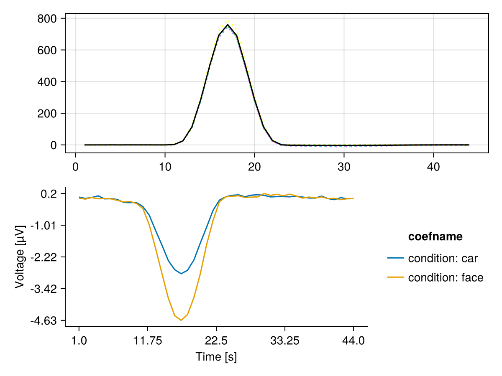

Cross-validated MANOVA (cvMANOVA)
This tutorial demonstrates how to perform cross-validated MANOVA on a two-level factor.
Setup
using Unfold
using UnfoldSim
using UnfoldStats
using StatsModels
using Random
using Statistics
using CairoMakie
using UnfoldMakie
using DataFramesSet seed for reproducible cross-validation folds.
Random.seed!(42)Random.TaskLocalRNG()Generate two-class EEG data
Generate simulated multichannel EEG data with two conditions (classes).
eeg, evts =
UnfoldSim.predef_eeg(; return_epoched = true, multichannel = true, noiselevel = 1.0)
fake_times = 1:size(eeg, 2)1:44Check the event structure with condition variable
first(evts, 5)| Row | continuous | condition | latency |
|---|---|---|---|
| Float64 | String | Int64 | |
| 1 | 2.77778 | car | 62 |
| 2 | -5.0 | face | 132 |
| 3 | -1.66667 | car | 196 |
| 4 | -5.0 | car | 249 |
| 5 | 5.0 | car | 303 |
Fit an Unfold-Model
For cvMANOVA we need a overspecified designmatrix. Thus instead of using an intercept, we have one column for each level of any categorical predictor we want to use.
f = @formula 0 ~ 0 + condition
contrasts = Dict(:condition => StatsModels.FullDummyCoding())
m = fit(UnfoldModel, f, evts, eeg, fake_times; contrasts = contrasts, fit = false)As you can see, we have a binary designmatrix now. This is later important to define the contrasts.
modelmatrix(m)[1][1:5, :]5×2 Matrix{Float64}:
1.0 0.0
0.0 1.0
1.0 0.0
1.0 0.0
1.0 0.0Fit with k-fold cross-validation
We use the cross-validation solver, and importantly, we directly fit the test-set Β estimates as well
cv_solver = Unfold.solver_cv(n_folds = 5, shuffle = true, fit_test = true)
fit!(m, eeg; solver = cv_solver) # note: we could have run the fit(...;solver=...) directlyRun cvMANOVA
Define a two-level contrast to compare the two classes: [-1, 1] This means: (class 2) - (class 1)
C = [-1, 1]2-element Vector{Int64}:
-1
1We use only the "baseline" period (first 10 time samples) to estimate a noise covariance.
Y_baseline = eeg[:, 1:10, :]227×10×2000 Array{Float64, 3}:
[:, :, 1] =
0.0963512 0.296782 0.367625 0.507078 … 2.27102 -0.502
0.363721 1.11682 0.210132 -0.206326 1.25108 0.0970881
-0.200063 1.7996 -0.540252 -0.167531 0.755207 1.23244
-0.908306 1.87472 0.14824 -0.602727 -0.000210963 0.576884
-0.41969 1.31847 0.162478 -0.743256 0.134281 0.361602
0.992518 1.01828 1.12394 -0.532246 … 0.778761 0.735657
0.704806 0.900189 0.690947 -0.243942 0.943577 1.8016
0.16211 0.582468 0.146031 0.553085 1.21197 2.89709
0.254272 0.0861858 1.10026 0.281201 -0.596352 1.59605
0.584285 0.36646 0.984162 0.287287 -0.520942 0.65104
⋮ ⋱
1.66741 0.937325 -0.0206101 1.15624 0.382023 0.000404776
1.43491 1.04571 0.433735 1.13577 2.53125 1.95664
1.11543 0.920152 0.516066 1.4927 … 0.194817 0.188625
0.0154837 1.31459 0.51524 1.97835 0.903128 2.62612
1.04899 1.53839 -0.401339 1.13741 -0.835309 -0.0287393
1.21282 1.58778 -0.00196326 0.947977 2.29571 1.97468
0.438833 0.747917 0.815049 0.882449 0.16613 -0.122593
0.230733 0.559364 0.304127 1.84159 … 1.13805 1.28304
0.598123 0.420412 1.00129 1.85009 1.66248 2.57868
[:, :, 2] =
-0.0870234 0.0794038 0.892984 … -0.495719 -0.531617 0.989278
-1.89777 0.371146 0.151365 -0.4416 0.35247 1.19747
-0.162279 0.519246 1.15505 -0.474139 -0.254455 1.86397
-0.609065 0.604999 -0.44135 -0.796232 -0.432839 -0.0773412
0.294427 1.63501 0.322309 -0.898721 -0.579269 0.357757
-0.0912893 0.0441106 -0.495401 … -1.19809 1.01113 0.265108
-0.28614 -0.0939099 -0.0362469 -1.9027 0.217338 0.652034
-0.886929 -0.0369879 -0.161064 -0.938569 0.38145 1.06512
0.0195937 0.0390851 -0.642964 -2.01501 0.302826 0.103942
0.197991 -1.24738 0.195199 -1.37482 -0.178854 1.21016
⋮ ⋱
1.82147 -0.0454672 -0.988605 0.70504 0.922349 -0.353904
1.24526 0.412308 -0.637071 2.13523 1.73592 1.42947
1.91989 0.431208 0.693694 … -0.311202 -0.0562465 0.555483
1.33202 0.121355 0.363423 1.44474 2.28369 2.4782
0.706332 0.607218 0.324234 -1.79528 -0.542613 0.922442
0.463637 0.557818 -0.341304 0.0100706 1.85265 1.64866
1.25785 1.05046 -0.343433 -0.804225 0.512692 0.475695
1.14571 1.23835 -0.51955 … 0.512962 2.26578 1.65088
0.730601 0.63359 -1.25735 1.46199 3.20238 3.75343
[:, :, 3] =
2.07535 -0.432275 0.421281 … 0.721209 0.318514 0.631521
0.284096 -0.52713 0.453926 0.118524 0.742032 -0.0874783
1.6556 -1.05414 -0.073299 0.28344 1.50683 0.318716
0.901606 -0.910655 -0.416848 1.66189 1.22705 -1.09579
2.50188 -0.577648 0.424701 0.997202 1.82247 -0.278591
3.09861 -1.15775 -0.158408 … 0.594494 2.24274 -1.10355
2.20199 -0.696343 -0.377166 0.316759 1.39484 -0.651334
2.66554 0.47295 -0.185165 0.422208 3.49047 -0.414894
1.254 -0.73753 0.89942 -0.154837 1.89258 -0.448172
1.5913 -0.763898 0.838926 -0.651538 0.797839 0.636703
⋮ ⋱
-0.809213 0.420691 -0.0504387 0.819086 -0.00228744 -0.888612
-0.615878 -0.634501 0.508066 2.31982 0.959104 -0.244277
-0.618944 -0.567236 0.178958 … 0.606113 -0.702823 -2.30943
-0.0859383 0.28279 0.549379 2.31215 1.76879 1.09983
0.705187 0.568644 0.473934 -0.80134 -0.684637 -2.3559
-0.0733068 0.469976 1.00934 1.41128 1.58268 -0.339033
0.784069 0.743978 0.765745 -0.59185 -0.924447 -1.82011
0.624733 0.23413 0.907739 … 2.21068 0.73605 -0.506002
-0.458906 0.185027 0.215702 2.78654 3.15843 1.29128
;;; …
[:, :, 1998] =
-0.679038 -0.544988 -0.420106 … -0.996365 -0.359538 0.0169396
-0.633814 0.911593 -0.431269 -1.395 -0.735133 0.708236
-0.426647 0.820558 -0.0634078 -0.136457 0.0991167 0.568242
0.117029 0.95989 -1.00307 -0.48669 -0.043622 1.19699
-0.993205 1.05239 -0.914996 0.293541 -0.942716 1.0063
-0.0449072 1.6223 -0.569431 … 0.680836 -0.564506 1.2756
-0.340683 1.16042 -0.422939 -0.0952638 0.517793 0.510025
0.281814 0.618996 -0.620713 1.00952 0.856814 0.780774
-0.495178 0.0946857 0.111281 -0.108613 -0.681248 -0.0497687
0.297417 0.961541 -0.663484 0.187763 -0.948049 0.560594
⋮ ⋱
1.04488 0.0806134 -1.11984 -1.50081 0.736689 0.383153
0.781003 0.0981657 -1.13905 -0.38074 1.65432 1.75069
-0.0158357 -0.35591 0.342927 … -2.12232 0.247016 -0.386283
-0.0348949 0.195775 -0.947459 0.315877 1.80575 2.51258
-0.377352 0.836842 -1.82328 -1.69829 -0.780556 -0.337257
-0.891196 0.104771 -1.08896 0.923153 1.87929 1.35348
-0.778726 -0.487809 -0.752514 -1.46864 0.670777 -0.689846
-0.956531 -0.535557 -0.996877 … -0.324799 2.0999 0.157195
-0.902094 -0.764453 0.855297 0.120012 2.67161 1.9354
[:, :, 1999] =
-0.827666 -0.782462 -1.65062 … -0.440805 0.0868132 0.518449
-0.415333 -0.837552 -0.930311 -0.558956 0.786665 0.38217
-1.50044 -0.124058 -0.381854 -1.73985 0.822121 1.32168
-1.57865 0.429275 -0.545634 -1.18125 -0.18109 0.83397
-0.997956 -0.152478 -0.00571309 -0.629744 -1.53679 1.40007
-2.90931 -0.727424 -0.0761073 … -0.32561 0.196381 1.72092
-2.75833 -0.591109 0.142124 -0.406644 -0.165898 1.4972
-2.32683 -0.46969 -1.36657 1.07957 0.321906 1.56673
-2.32773 -0.749336 -0.711895 -0.276989 -0.927428 1.40281
-1.94859 -0.590533 -1.27964 -0.600966 -0.598971 1.39718
⋮ ⋱
-0.973676 -0.0914168 -1.93138 0.102161 0.294936 -0.819321
-0.111756 -1.56776 -1.94727 0.221317 2.14961 0.860578
-1.2137 0.369986 -0.946367 … -0.506831 1.00743 0.108883
-0.648497 -0.154774 -2.00579 1.40867 2.69737 2.75756
-1.97016 -0.133429 -1.38043 -0.588996 0.0885707 -0.26878
-1.63574 -0.612499 -2.24342 1.64988 1.63598 1.41117
-1.97316 -1.02938 -2.19561 -0.0619248 0.828944 -1.09465
-0.87899 -0.588708 -2.93313 … 1.92153 2.43669 0.0650841
-0.790727 -0.551735 -2.89869 2.40103 2.79198 0.435493
[:, :, 2000] =
0.442597 0.00541027 -0.0258071 … 0.247691 -0.636725 -0.680686
1.25319 -0.467589 0.41126 0.45513 -1.02571 -1.81761
-0.0230593 0.372221 0.100091 0.419579 -0.456395 -0.908715
0.751124 0.0350623 0.76096 0.0201935 -0.289023 -0.294606
0.331027 -0.0206506 0.402083 0.302812 -0.187599 -1.29074
0.862825 -0.438075 0.463198 … 1.21711 -0.491655 -0.473485
0.522907 -0.072889 0.853946 0.654319 0.95518 -0.612708
1.04472 0.0593268 1.18799 0.66031 0.364808 -0.992069
0.235933 -0.449953 0.600784 -0.177005 -1.79167 -0.720036
0.0548505 0.62143 0.419871 -0.311599 -1.37393 -0.439002
⋮ ⋱
-0.400804 -0.532019 0.020369 0.216702 1.21322 0.319114
0.19688 0.506529 0.680288 -0.185962 1.53842 1.37837
-0.773523 -0.677099 0.883267 … -1.17486 0.677303 -1.08956
-0.965152 -1.88643 -0.0259669 0.396337 2.52168 1.76041
-0.897255 -1.67392 0.58711 -2.4181 -0.595829 -1.68316
-0.869552 -1.80878 0.398115 0.456974 1.27713 0.541493
-1.04301 -0.557165 0.621291 -0.636058 -1.63861 -0.357229
-0.490728 -0.404589 0.511815 … 0.558512 0.648641 1.67634
-0.253403 0.221419 0.351951 0.544773 1.77722 3.70482Compute cvMANOVA's D for each timepoint
D_per_fold = cvMANOVA(m, Y_baseline; C = C)5-element Vector{Vector{Float64}}:
[0.022615401682988256, -0.019552758712878496, -0.2299223253039541, 0.016304114407627687, -0.18929415033978164, 0.1723583016433331, -0.062114914554440806, 0.34620748095767473, -0.05164902602099354, -0.16232899302553497 … -0.06022039500558656, -0.16292030017319803, -0.03128902865326416, 0.013544897266084094, 0.09259351267894671, -0.026327735559565694, -0.09958465773857285, 0.10030115207258736, -0.13483831732949478, -0.41890805918853985]
[-0.25020777627910135, -0.0026284863073210408, 0.04796006383366498, 0.22552678454976136, -0.06027900605992583, -0.027880171247368267, 0.0028448199693821403, -0.00591510022026928, -0.13168290205319236, -0.15458375723909185 … -4.8663093924136005, -3.665911705691112, -2.355856782077997, -1.366325096713858, -1.1902126691103347, -0.40492398440671296, 0.1805732672847179, 0.05999085812567869, 0.09991265472926084, -0.02052141920826475]
[-0.046834215210001195, -0.018693501415962738, -0.09723953430632189, -0.07487714123488043, -0.14967765223689034, 0.018818444905059736, 0.08544521350113378, 0.16090061250302562, -0.1685664624357436, -0.20615422642632023 … -3.1606869669478592, -2.0584519846357687, -2.0263141399240054, -0.7657915398323033, -0.31178922369313816, 0.07544178636154497, -0.06284929815102781, 0.17662807037443207, 0.1584964805511484, -0.24901224241210998]
[0.0012516557355590192, -0.24928671147470544, -0.08741642500379258, 0.07581734878725836, 0.06436613962964129, 0.24289679066838127, -0.05934774953076514, -0.2580261658314134, -0.21824167671065353, 0.12848161678668307 … -0.2748525028666598, -0.03428209642029262, 0.24363465689461716, -0.06360686333929477, 0.27932046539568944, -0.03579939838078565, 0.02255478399534097, 0.011673102582340953, 0.26117168389682177, -0.10400437634358062]
[0.25158289984832405, -0.1678980623656753, -0.08671276708577923, 0.2471689025854725, 0.06634952631335289, 0.21144046923901122, -0.032031978838923676, 0.27214169794176485, 0.07425640750256167, 0.010768624482109274 … -0.8218582124347917, -0.5904118743645893, -0.29772310006560276, -0.19277905479483753, -0.31127828149494197, -0.1846987238829482, 0.2436713860412156, -0.03571829787932668, 0.0773591466911439, -0.037732325958496245]Aggregate the discriminability statistic across all CV folds.
D_mean = mean(D_per_fold)44-element Vector{Float64}:
-0.004318406844446243
-0.09161190405530861
-0.09066619757323656
0.0979880018190479
-0.053707028538720725
0.12352676704168339
-0.013040921890722739
0.10306170507015651
-0.09917673194360428
-0.07676334708443093
⋮
-1.302395592256992
-0.8935096787652504
-0.4749915314828419
-0.28827323924475573
-0.11526161117369352
0.056873096286334766
0.06257497705514248
0.09242032970777603
-0.16603568462219828This is the time-resolved discriminability: higher values = better discrimination
f, ax, h = series(reduce(hcat, D_per_fold)', linestyle = :dot)
lines!(ax, D_mean, color = :black)
plot_erp!(f[2, 1], subset(coeftable(m), :channel => (x -> x .== 1)))
f
This page was generated using Literate.jl.